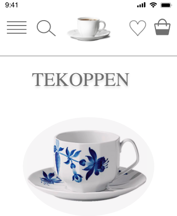

Tema 3 - Grundlæggende UX, omhandler samspillet mellem brugere og brugergrænseflader. Her lærte vi teorier og metoder som kan benyttes til research, design og test i en digital produktudvikling. Vi blev introduceret til hifi prototyper (f.eks. UI kits i Adobe XD) og copywriting, og vi arbejdede med anaylse og prototyping i produktionen af digitale brugergrænseflader, og endeligt indgik vi i ad-hoc gruppearbejde undervejs i designprocessen. Meget lærerigt tema, med fokus på visuelt design, research, analyse, content, prototyping og test
Opgaven om prototypen, lyder på at udabrjede en prototype af en app i Adobe XD. Vi kunne enten vælge mellem en app der sælger tekopper, frugt eller gamle LP plader. Jeg valgte at udarbejde en app der sælger tekopper.
I opgaven om dataindsamling, fik vi stillet til opgave at lave forskellige slags research. Først skulle vi lave desk-research om et bestemt emne, hvor jeg valgte at undersøge Lego brugt i sammenhæng med børn læring. Hefter skulle vi lave observation, hvor jeg valgte at observere folk der kom på Frederikssund togstation. Dernæst skulle jeg udarbejde et interview. Her valgte jeg at interviewe Sanne Gaardsøe om hvordan hun finder underholdning i hverdagen. Dette blev udført på baggrund af en interviewguide og forberedende spørgsmål. Endeligt skulle vi anvende survey som metode, hvilket består af et spørgeskema til et bestemt antal respondenter eller et spørgeskema hvor man ligger den frit tilgængeligt så alle der har lyst til at svare på det, kan det. Jeg udarbejde et spørgeskema omhandlende bopæl, transport til KEA, vurdering af kantinen på KEA, ens fortrukne browser, gennemsnitlig skærmtid, mest brugte apps, og hvornår man bruger computer frem for telefonen.
Design Sprint opgaven, blev udarbejdet i en gruppe bestående af 4 personer. Opgaven lød på at udvikle en prototype af en app i Adobe XD, som skulle hjælpe med at opfylde et behov hos de studerende på KEA. Min gruppe valgte at udarbejde en app, hvor man har samlet en studiekalender, en side med events på skolen, samt skolearbejde og deadlines i én app. På denne måde behøver de studerende ikke at gå på mange forskellige sider for at finde lektier og events og andet relevant.